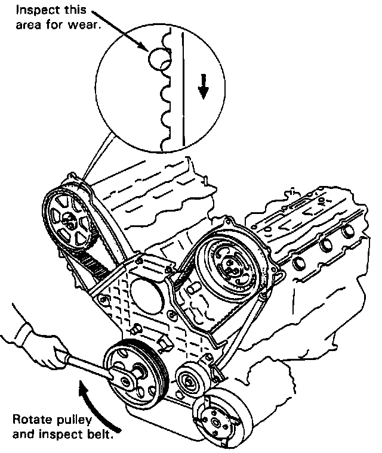

Timing Belt: Testing and Inspection
Inspection
CAUTION: The crankshaft should rotate clockwise when viewed from the pulley side.

NOTE:
- Replace belt if oil soaked.
- Quickly remove any oil or solvent that gets on the belt.
- If pulley bolt broke loose while turning crank, retorque it to 170 N.m 17.0 kg.m, 123 lb-ft).